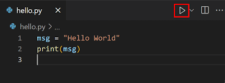

Linguagem de Programação Python
 Introdução
Introdução

Python é uma linguagem de programação de alto nível criada por Guido van Rossum e lançada em 1991.
É conhecida por sua sintaxe clara e legível, tornando-a ideal para iniciantes e projetos complexos.
A filosofia do Python enfatiza a legibilidade do código e uma sintaxe que permite que os programadores
expressem conceitos em menos linhas de código do que em outras linguagens.
Características Principais
- Sintaxe Simples: Fácil de aprender e usar.
- Linguagem Multiparadigma: Suporta programação orientada a objetos, funcional e procedural.
- Biblioteca Padrão Abrangente: Muitas funcionalidades disponíveis sem necessidade de instalar pacotes adicionais.
- Portabilidade: Funciona em diferentes sistemas operacionais como Windows, macOS e Linux.
- Comunidade Ativa: Grande quantidade de recursos, tutoriais e suporte.
Por que Eu Gosto de Python
Python é minha linguagem favorita por sua simplicidade e poder. Com Python, posso focar na lógica
do problema sem me preocupar com complexidades sintáticas.
Exemplos de Código em Python
# Exemplo: Olá Mundo
print("Olá, Mundo!")
# Exemplo: Função que soma dois números
def soma(a, b):
return a + b
resultado = soma(5, 7)
print("O resultado é:", resultado)
Voltar ao topo